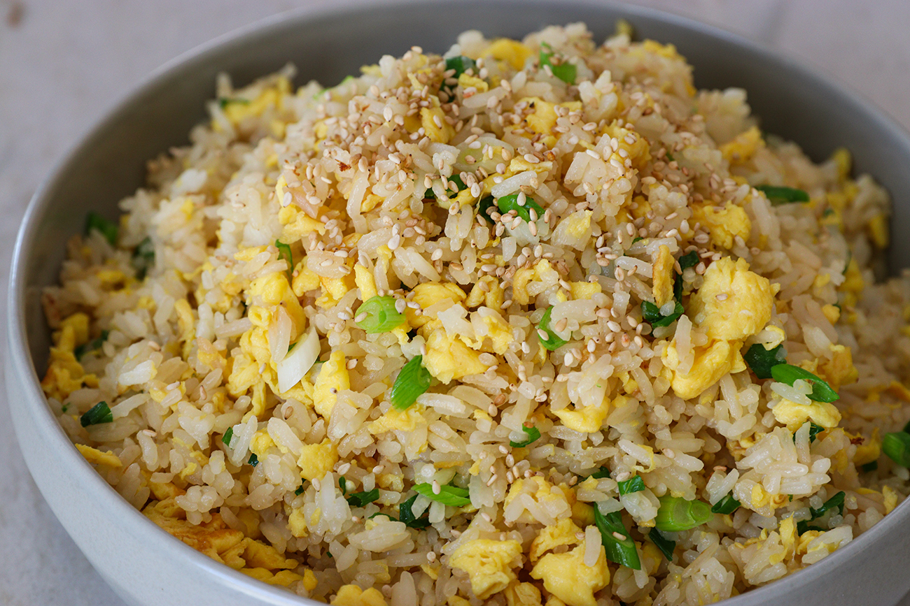

Fried rice with eggs topped with fresh green onions and sesame seeds.
Ingredients:
- 3 Table spoons of cooking oil
- 4 Eggs
- 4 cups of rice
- 2 Table spoons of soy sauce
- Pinch of salt
- 4 Green onions thinly sliced
How to make?
- Beat eggs well with pinch of salt and thinly slice green onions. Set aside.
- Heat a skillet and add the cooking oil to cover the bottom of the skillet. Pour the eggs into the skillet and scramble them.
- When the eggs are cooked 3/4 way, add remaining 2 tbsp cooking oil and cold rice.
- A day old cold rice is my absolute favorite to make fried rice. It has beautiful aroma and fluffy texture that can hold the shape well while frying.
- Breakdown rice and mix it with the eggs.
- Add soy sauce around the edge of the wok, so it will burn slightly for the smoky umami flavor. Add salt to your taste and mix everything well. Reduce heat to low if you need to.
- Turn off the heat, stir in green onions and finally serve with sesame seeds on top.
Copyright © https://seonkyounglongest.com/easy-egg-fried-rice